Breakthroughs in Chemical Thermodynamics#
“Die Energie der Welt ist constant. Die Entropie der Welt strebt einem Maximum zu.” (“The energy of the universe is constant. The entropy of the universe tends to a maximum.”) – Rudolf Clausius, “Über verschiedene für die Anwendung bequeme Formen der Hauptgleichungen der mechanischen Wärmetheorie,” Annalen der Physik und Chemie 125, 353-400 (1865), closing lines.
Chemical thermodynamics is the nineteenth century’s answer to a
deceptively simple question: which way does a chemical system go, and
how far? Not how fast – that is kinetics’s question – but toward what
final state, and at what cost or benefit in heat, work, and the
irreducible statistical tendency Clausius named entropy that same year.
The systems in chemistrykit.thermo retrace that project from the
first quantitative gas and solution laws through Gibbs’s still-
unsurpassed general framework of chemical equilibrium, to the modern
engineering equations of state real gases actually obey. This chronology
traces the major conceptual breakthroughs behind the package, with a
pointer to the corresponding implementation at each stop.
1803 – Henry’s Law of Gas Solubility#
William Henry, studying how much of a gas dissolves in a liquid at equilibrium, found a strikingly simple proportionality: the amount of gas absorbed is directly proportional to the pressure of that gas above the liquid, at a fixed temperature.
Unlike Raoult’s law below, Henry’s constant \(K_H\) is not the pure solute’s own vapor pressure – it is an empirical, solute-and-solvent- specific number, because a dilute solute molecule surrounded entirely by solvent experiences a completely different local environment than it would in its own pure liquid. Henry’s law and Raoult’s law turn out to be two different limiting laws of the very same real solution, exact in opposite composition extremes (dilute solute versus nearly pure solute) rather than competing descriptions of the same regime – a picture only fully appreciated once G. N. Lewis’s early-twentieth-century activity/ fugacity framework explained why both idealizations, despite disagreeing everywhere in between, are each exactly right at their own end of the composition range.
Implementation: henry_law_pressure()
implements exactly this proportionality; the example below builds an
illustrative real (non-ideal) partial-pressure curve, using
raoult_vapor_pressure() for
the other limit, and shows it hugging the Henry’s-law line at the dilute
end and the Raoult’s-law line at the nearly-pure end of the same
composition range.
References: W. Henry, “Experiments on the Quantity of Gases Absorbed by Water, at Different Temperatures, and under Different Pressures,” Philos. Trans. R. Soc. 93, 29-274 (1803).
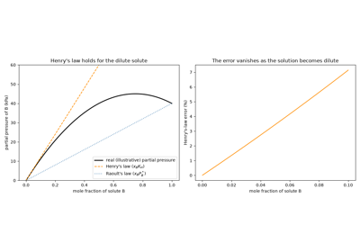
Henry’s law: the dilute-solute limit of a real solution
1834 – 1850 – Clapeyron, Clausius, and the Ideal Gas and Vapor-Pressure Laws#
Benoit Paul Emile Clapeyron combined the empirical gas laws accumulated piecemeal over the preceding century and a half – Boyle’s inverse pressure-volume relation (1662), Gay-Lussac’s and Charles’s linear temperature dependence (published 1802, with Charles’s own unpublished observations dating to the 1780s), and Avogadro’s hypothesis (1811) that equal volumes of gas at the same temperature and pressure contain equal numbers of molecules – into the single combined ideal gas law still taught today.
The same 1834 memoir, reformulating Sadi Carnot’s largely unnoticed 1824 theory of heat engines in the newer language of calculus, also derived (via Carnot’s caloric-theory reasoning, since the mechanical theory of heat did not yet exist) an equation relating a phase boundary’s slope to the associated latent heat – the relation now named for both Clapeyron and Rudolf Clausius, who rederived it in 1850 on the rigorous footing of the (by then fully mechanical) second law of thermodynamics, free of Clapeyron’s caloric assumptions, and specialized it – assuming the vapor behaves ideally and the condensed phase’s volume is negligible – to the simpler exponential form actually used to predict a liquid’s vapor pressure at temperatures away from any single measured reference point:
Implementation: chemistrykit.thermo.systems.equations_of_state.IdealGas
implements Clapeyron’s combined gas law directly (its molar_volume
recovers the textbook 22.4 L/mol at standard temperature and pressure
exactly); chemistrykit.thermo.systems.phase_equilibria.ClausiusClapeyron
implements the integrated Clausius-Clapeyron vapor-pressure equation, with
boiling_point()
inverting it to find the temperature at which a liquid boils under any
given pressure, and
from_two_points()
extracting an unknown enthalpy of vaporization from two measured
points on the boundary.
References: B. P. E. Clapeyron, “Mémoire sur la puissance motrice de la chaleur,” Journal de l’École Polytechnique 14, 153-190 (1834); R. Clausius, “Über die bewegende Kraft der Wärme,” Ann. Phys. Chem. 79, 368-397 and 500-524 (1850).
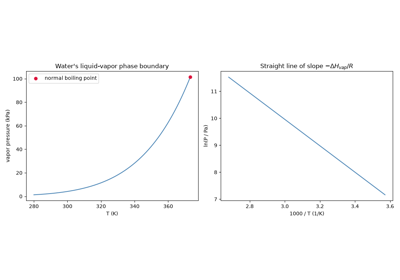
The Clausius-Clapeyron vapor-pressure curve of water
1840 – Hess’s Law of Constant Heat Summation#
Germain Henri Hess, a Swiss-born chemist working in St. Petersburg, measured the heat released when sulfuric acid was diluted with water in one step or in several, and when various bases were neutralized by different routes. He found that the total heat was always the same: the heat of a chemical change depends only on where it starts and where it ends, not on the intermediate steps. His law predates the first law of thermodynamics by several years, but it is exactly what the first law later explained – enthalpy is a state function, so the enthalpy changes of any set of steps that add up to a reaction also add up:
The law made thermochemistry a bookkeeping science. Enthalpies of reactions that are hard or impossible to carry out cleanly – such as burning graphite only as far as carbon monoxide – can be found from reactions that are easy to measure, and a single table of standard enthalpies of formation gives the enthalpy of any reaction: \(\Delta_rH^\circ = \sum_i \nu_i\,\Delta_fH_i^\circ\).
Implementation: hess_law_enthalpy() sums a
weighted combination of step enthalpies (a negative weight reverses a
step), and reaction_enthalpy_from_formation()
applies the law to formation enthalpies. The tests check the two-step
combustion of graphite (-110.5 and -283.0 kJ/mol adding up to
-393.5 kJ/mol) and that both functions agree for random reaction
combinations.
References: G. H. Hess, “Thermochemische Untersuchungen,” Ann. Phys. Chem. 50, 385-404 (1840).
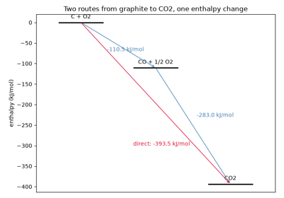
Hess’s law: reaction enthalpy does not depend on the path
1864 – Guldberg and Waage’s Law of Mass Action#
Cato Maximilian Guldberg and Peter Waage, working in Christiania (now Oslo), proposed that a reaction’s rate – and hence, at equilibrium, the balance between its forward and reverse rates – depends on the reacting substances’ “active masses” (essentially their concentrations), raised to powers reflecting how many molecules of each participate. Announced only in Norwegian, in a venue with essentially no international readership, the 1864 paper went unnoticed outside Scandinavia for years; a French translation in 1867 fared little better. Guldberg and Waage’s original derivation also rested on a kinetic argument that was not fully rigorous, and in 1879 the two authors themselves published a revised, more careful treatment – reframing the law explicitly as a dynamic equilibrium between opposing forward and reverse reaction rates, rather than the more static force-balance language of the 1864 original. In its modern equilibrium form, the law states that the reaction quotient built from the products’ and reactants’ activities, each raised to its stoichiometric coefficient, equals a constant, the equilibrium constant K, once the reaction has stopped proceeding net in either direction:
Implementation: reaction_quotient()
computes exactly this product directly from a set of activities and
signed stoichiometric coefficients; kp_from_kc()
and kc_from_kp() convert
between the pressure- and concentration-based forms of the same
equilibrium constant. The Gibbs-energy-minimization approach implemented
by solve_equilibrium_composition()
(see 1876, below) is the modern generalization of the same equilibrium
condition – at its minimum, \(dG/d\xi_j = \sum_i \nu_{ij}\mu_i = 0\)
for every reaction j, which is exactly \(Q_j = K_j\) reached by a
different numerical route – and the example below verifies this equality
directly, confirming that reaction_quotient(), evaluated at the
solver’s own converged equilibrium composition, reproduces the target
equilibrium constant.
References: C. M. Guldberg and P. Waage, “Studier over Affiniteten,” Forhandlinger: Videnskabs-Selskabet i Christiania (1864), 35; French translation, “Études sur les affinités chimiques,” (Christiania: Brøgger & Christie, 1867); revised treatment: C. M. Guldberg and P. Waage, J. Prakt. Chem. 19, 69-114 (1879).
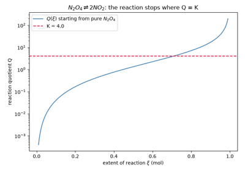
Guldberg and Waage’s law of mass action: Q = K at equilibrium
1869 – 1873 – Andrews, van der Waals, and the Continuity of Liquid and Gas#
Thomas Andrews’s painstaking experiments compressing carbon dioxide at closely spaced temperatures established, in his 1869 Bakerian Lecture, that liquid and gas are not two fundamentally different states of matter at all: above a sharply defined critical temperature, no amount of pressure can produce a distinct liquid phase, and a substance can be taken continuously from unambiguously gaseous to unambiguously liquid conditions by a path that never crosses a phase boundary, simply by going around the critical point. Johannes Diderik van der Waals, in his 1873 Leiden doctoral thesis – titled, in direct homage to Andrews, Over de Continuiteit van den Gas- en Vloeistoftoestand (“On the Continuity of the Gas and Liquid State”) – supplied the theory Andrews’s observation demanded: a single equation of state, modifying the ideal gas law with just two extra terms for intermolecular attraction (a) and finite molecular volume (b), that describes liquid and gas as the same underlying equation’s two possible branches rather than two separate laws stitched together.
Below the critical temperature the van der Waals cubic in \(V_m\) has three real positive roots – liquid, unstable, and vapor branches – and at the critical temperature itself, exactly the triple root Andrews’s data demanded. Van der Waals received the 1910 Nobel Prize in Physics for this equation.
Implementation: chemistrykit.thermo.systems.equations_of_state.VanDerWaals
implements exactly this equation of state, solving its cubic for
\(V_m\) via chemistrykit.thermo.utils.cubic_roots.real_positive_roots();
from_critical_constants()
builds an instance directly from a substance’s measured critical
temperature and pressure, and the resulting universal critical
compressibility factor \(Z_c = P_c V_c/(RT_c) = 3/8\) – independent
of which substance’s constants are used – is exactly the structural
signature of van der Waals’s theory (real gases’ actual \(Z_c\)
values, typically 0.23-0.31, deviate from this universal prediction, one
of the equation’s well-known quantitative limitations, addressed
empirically by Redlich-Kwong below).
References: T. Andrews, “On the Continuity of the Gaseous and Liquid States of Matter,” Philos. Trans. R. Soc. 159, 575-590 (1869); J. D. van der Waals, Over de Continuiteit van den Gas- en Vloeistoftoestand (doctoral thesis, Leiden, 1873).
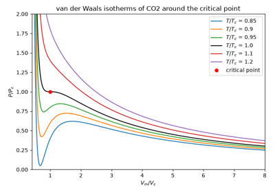
Andrews and van der Waals: continuity of the liquid and gas states
1876 – 1878 – Gibbs’s Equilibrium of Heterogeneous Substances#
Josiah Willard Gibbs’s “On the Equilibrium of Heterogeneous Substances,” published in two parts across the Transactions of the Connecticut Academy of Arts and Sciences – a journal with essentially no circulation among European chemists at the time – laid out, in about a hundred densely mathematical pages, most of the conceptual scaffolding modern chemical thermodynamics still stands on: the chemical potential \(\mu_i\), governing how a species’ free energy changes as it is added to a mixture or moves between phases; the free energy that bears his name, whose minimization at fixed temperature and pressure is the general condition for any chemical or phase equilibrium; and the phase rule,
fixing how many independent intensive variables (temperature, pressure, composition) can be varied at all while a given set of phases remains in equilibrium. Precisely because it was so far ahead of contemporary chemistry’s mathematical fluency, and published in such an obscure venue, Gibbs’s work was largely unread in Europe for over a decade; only after Wilhelm Ostwald’s 1892 German translation did van’t Hoff, Nernst, and others recognize – often to their own surprise – that a problem they were independently working out had already been solved, more generally, by an American mathematical physicist working in relative isolation at Yale.
Implementation: gibbs_phase_rule()
implements the phase rule directly; the ideal-gas chemical potential
\(\mu_i = \Delta G_{f,i}^\circ + RT\ln(x_i P/P^\circ)\) used by
gibbs_energy_of_mixture()
and minimized by
solve_equilibrium_composition()
is exactly Gibbs’s chemical-potential framework, applied here to solve
for a reacting mixture’s equilibrium composition by direct free-energy
minimization rather than by solving \(Q=K\) algebraically – the
two routes coincide exactly (see 1864, above) because Gibbs’s
equilibrium condition, \(\sum_i \nu_i \mu_i = 0\) for every reaction,
is the mass-action law, derived from a more general variational
principle.
References: J. W. Gibbs, “On the Equilibrium of Heterogeneous Substances,” Trans. Conn. Acad. Arts Sci. 3, 108-248 (1876) and 343-524 (1878).
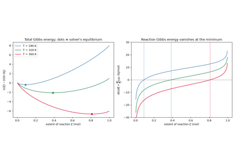
Gibbs’s equilibrium criterion: minimum total Gibbs energy
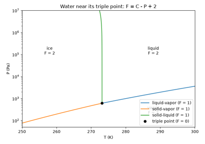
Gibbs’s phase rule on the phase diagram of water
1884 – van’t Hoff’s Equation for the Temperature Dependence of K#
Jacobus Henricus van’t Hoff’s Études de Dynamique Chimique – the same 1884 book that gave chemical kinetics its concept of reaction order (see Breakthroughs in Chemical Kinetics) – also supplied a companion result for chemical equilibrium: combining the equilibrium condition \(\Delta G^\circ=-RT\ln K\) with the Gibbs-Helmholtz relation gives an equilibrium constant’s exact temperature dependence, the van’t Hoff isochore,
the same exponential-in-\(1/T\) form Svante Arrhenius would, five years later, put on a firmer molecular footing for rate constants specifically (see Breakthroughs in Chemical Kinetics). Assuming the standard reaction enthalpy \(\Delta H^\circ\) is constant over the temperature range of interest, the isochore integrates to the same two-point form already used above (1834-1850) for a phase boundary’s vapor pressure:
and a plot of \(\ln K\) against \(1/T\) – the “van’t Hoff plot,” structurally identical to an Arrhenius plot – linearizes the relationship, letting \(\Delta H^\circ\) and \(\Delta S^\circ\) be read off directly as its slope and intercept, exactly the strategy Lineweaver and Burk would later apply to enzyme kinetics (see Breakthroughs in Chemical Kinetics).
Implementation: van_t_hoff_equilibrium_constant()
implements exactly the integrated two-point form – used below to verify
Le Chatelier’s qualitative temperature prediction directly;
fit_van_t_hoff()
implements the van’t Hoff-plot linear regression itself, recovering
\((\Delta H^\circ, \Delta S^\circ)\) from synthetic noisy
equilibrium-constant-vs-temperature data and returning a
VantHoffFit, structurally
identical to chemistrykit.kinetics.fit_arrhenius()’s Arrhenius-plot
fit for rate constants (see Breakthroughs in Chemical Kinetics).
References: J. H. van’t Hoff, Études de Dynamique Chimique (Amsterdam: Frederik Muller, 1884).
1884 – Le Chatelier’s Principle#
Henry Louis Le Chatelier proposed a single qualitative rule covering how any system at equilibrium responds to being disturbed: it shifts in whichever direction partially opposes the disturbance – consuming heat if heated, producing gas-phase moles if depressurized, consuming an added reactant – rather than amplifying it or staying put. Stated as a free-standing postulate in 1884, the principle was refined and given a more general thermodynamic-stability grounding a few years later by Karl Ferdinand Braun (hence sometimes “Le Chatelier-Braun principle”); it is now understood not as an independent law of nature but as a direct consequence of the same equilibrium condition Gibbs had already established – a stable equilibrium sits at a genuine minimum of the free energy, and a minimum, by definition, pushes back against any small displacement away from it.
Implementation: van_t_hoff_equilibrium_constant()
demonstrates exactly Le Chatelier’s temperature prediction: for an
endothermic reaction (positive \(\Delta H^\circ\)), the equilibrium
constant provably increases as temperature rises, in the direction that
partially absorbs the added heat, and its docstring example verifies
this monotonic increase directly; the equilibrium-composition solver
solve_equilibrium_composition()
demonstrates the same qualitative shift-toward-relief behavior for
arbitrary reacting mixtures, since it is, by construction, always
sitting at the free-energy minimum Le Chatelier’s principle describes
the response of.
References: H. Le Chatelier, “Sur un énoncé général des lois des équilibres chimiques,” C. R. Acad. Sci. 99, 786-789 (1884).
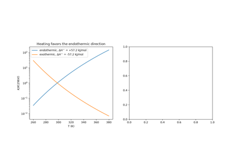
Le Chatelier’s principle: equilibrium shifts that oppose a disturbance
1886 – van’t Hoff’s Osmotic Pressure Law and the Modern Theory of Solutions#
Jacobus Henricus van’t Hoff, extending his 1884 kinetics work (see Breakthroughs in Chemical Kinetics) into the thermodynamics of solutions, found that a dilute solution’s osmotic pressure obeys an equation formally identical to the ideal gas law – a striking, and at the time genuinely surprising, analogy between dissolved solute particles and gas molecules that has no deeper physical necessity behind it (the mechanism of osmosis, solvent flow through a semipermeable membrane, has nothing literally to do with a gas’s kinetic pressure), yet reproduces the correct pressure to remarkable accuracy:
Van’t Hoff’s van’t Hoff factor i – the number of particles each solute formula unit actually contributes in solution – was itself indirect evidence for electrolyte dissociation, since strong electrolytes like NaCl were found to depress a solvent’s freezing point and elevate osmotic pressure by roughly twice the amount a non-dissociating solute of the same molarity would, exactly as expected if each formula unit splits into two independent ions in solution (a picture Svante Arrhenius would put on a firmer theoretical footing the same decade with his theory of electrolytic dissociation). Van’t Hoff received the first Nobel Prize in Chemistry in 1901, “in recognition of the extraordinary services he has rendered by the discovery of the laws of chemical dynamics and osmotic pressure in solutions.”
Implementation: osmotic_pressure()
implements exactly this equation, and
freezing_point_depression()
and boiling_point_elevation()
implement the closely related colligative-property laws
\(\Delta T = iKb\) sharing the same van’t Hoff factor i convention,
using the tabulated solvent constants in
CRYOSCOPIC_CONSTANTS; the
example below computes all three colligative properties for an aqueous
NaCl solution with \(i=2\).
References: J. H. van’t Hoff, “Die Rolle des osmotischen Druckes in der Analogie zwischen Lösungen und Gasen,” Z. Phys. Chem. 1, 481-508 (1887) (the definitive German statement; first announced in Swedish the previous year: K. Sven. Vetensk.-Akad. Handl. 21, No. 17 (1886)).
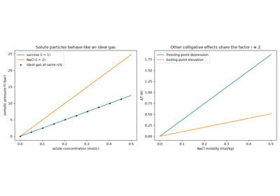
van’t Hoff’s osmotic pressure law, Pi = iMRT
1887 – Raoult’s Law of Vapor Pressure#
Francois-Marie Raoult, building on his own earlier cryoscopic measurements of freezing-point depression through the early 1880s (the experimental tool he had used, before van’t Hoff’s theory existed to explain it, simply to determine unknown solutes’ molecular weights), turned to a mixture’s vapor pressure directly and found an equally simple proportionality: a component’s partial vapor pressure above an ideal mixture is just its mole fraction times its own pure-liquid vapor pressure.
Combined with Dalton’s law of partial pressures across both components of a binary mixture, Raoult’s law predicts the full vapor-liquid equilibrium curve for an ideal solution: the total vapor pressure as a function of liquid composition, and – since the more volatile component always contributes disproportionately to the vapor – the vapor’s own, systematically different composition. That vapor-enrichment effect is the entire physical basis of fractional distillation, arguably chemistry’s single most economically important separation technique. Raoult’s law is, like van der Waals’s equation above, an idealization: real mixtures generally deviate from it except in the dilute-solvent limit, exactly the composition regime in which Henry’s law (1803, above) takes over describing the solute instead.
Implementation: raoult_vapor_pressure()
implements this proportionality directly, and
BinaryIdealSolution
combines it with Dalton’s law for both components of a binary mixture,
via total_pressure()
and vapor_composition(),
to produce the full P-x-y vapor-liquid-equilibrium picture the example
below plots for an idealized benzene/toluene mixture.
References: F. M. Raoult, “Loi générale de la tension de vapeur des dissolvants,” C. R. Acad. Sci. 104, 1430-1433 (1887).
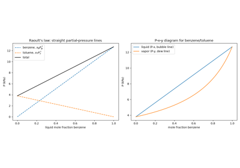
Raoult’s law and the P-x-y diagram of an ideal solution
1895 – Margules’s Activity Coefficients for Non-Ideal Solutions#
Raoult’s law (1887, above) describes an ideal mixture, but most real liquid mixtures deviate from it – sometimes so strongly that the vapor and liquid have the same composition at some point (an azeotrope), which no ideal solution can do. Max Margules, a Viennese physicist and meteorologist, showed how to describe these deviations while staying consistent with thermodynamics. He wrote the logarithm of each component’s activity coefficient \(\gamma_i\) as a power series in mole fraction, constrained by the Gibbs-Duhem relation \(x_1\,d\ln\gamma_1 + x_2\,d\ln\gamma_2 = 0\). Keeping only the first term gives the one-parameter Margules model,
with excess Gibbs energy \(G^E = RT A x_1 x_2\). A positive \(A\) raises the vapor pressure above Raoult’s line, a negative one lowers it, and a large enough \(A\) of either sign produces an azeotrope. The model also unites the two limiting laws above: each component obeys Raoult’s law as it becomes pure (\(\gamma_i \to 1\)) and Henry’s law with \(K_H = P_i^* e^{A}\) as it becomes dilute. Margules’s expansion is the ancestor of every activity-coefficient model used in chemical engineering, from van Laar’s to Wilson’s and NRTL.
Implementation: MargulesSolution
implements the one-parameter model, with activity coefficients, excess
Gibbs energy, partial and total pressures, vapor composition, and the
infinite-dilution Henry’s-law constant. The tests check that
\(A = 0\) reproduces
BinaryIdealSolution, that the model
satisfies the Gibbs-Duhem relation, and that it tends to Henry’s law at
infinite dilution.
References: M. Margules, “Über die Zusammensetzung der gesättigten Dämpfe von Mischungen,” Sitzungsber. Kais. Akad. Wiss. Wien, Math.-Naturwiss. Kl., Abt. IIa, 104, 1243-1278 (1895).
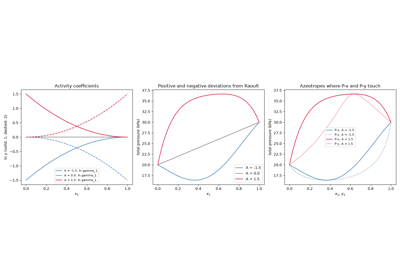
Margules activity coefficients: deviations from Raoult’s law
1901 – Lewis’s Fugacity#
Gibbs’s chemical potential (1876, above) has a simple form only for ideal gases: \(\mu = \mu^\circ + RT\ln(P/P^\circ)\). Gilbert Newton Lewis kept that simple form for every real substance by defining a new quantity, the fugacity \(f\) (from the Latin for “tendency to escape”), to take the place of pressure:
The ratio \(\phi = f/P\), the fugacity coefficient, measures how far a real gas is from ideal, and it can be computed from any equation of state. Lewis’s definition also gives a practical test for phase equilibrium: two phases of a substance coexist when their fugacities are equal, which is how vapor pressures are now computed from equations of state. Lewis later extended the same idea to solutions with the activity (1907), and his 1923 textbook with Merle Randall, Thermodynamics and the Free Energy of Chemical Substances, made both concepts standard.
Implementation: fugacity_coefficient()
evaluates
\(\ln\phi = Z - 1 - \ln Z + \frac{1}{RT}\int_{V_m}^\infty (P - RT/V)\,dV\)
by quadrature for any equation of state, and
fugacity() returns \(f = \phi P\).
saturation_pressure() applies Lewis’s
equal-fugacity condition to a cubic equation of state to find the vapor
pressure. The tests compare against the closed-form van der Waals and
Redlich-Kwong fugacity coefficients and the known van der Waals
coexistence pressure \(P/P_c = 0.647\) at \(T/T_c = 0.9\).
References: G. N. Lewis, “The Law of Physico-Chemical Change,” Proc. Am. Acad. Arts Sci. 37, 49-69 (1901); G. N. Lewis and M. Randall, Thermodynamics and the Free Energy of Chemical Substances (New York: McGraw-Hill, 1923).
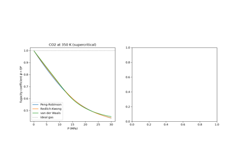
Lewis fugacity: the effective pressure of a real gas
1906 – Nernst’s Heat Theorem and the Third Law#
Walther Nernst, investigating why calculated chemical affinities from purely thermal (calorimetric) measurements kept disagreeing with directly measured equilibrium constants at low temperature, proposed his “heat theorem”: as temperature approaches absolute zero, the entropy change of any reaction between pure, perfectly crystalline condensed phases approaches zero, \(\Delta S \to 0\) as \(T \to 0\). Nernst’s own 1906 statement was comparatively cautious – a claim about differences in entropy between reacting substances near absolute zero, not yet the sweeping statement that every pure substance’s entropy itself vanishes there; it was Max Planck who, a few years later, generalized Nernst’s theorem into the stronger, now-standard third law – \(S \to 0\) as \(T \to 0\) for any perfect crystal – a step Nernst himself accepted only with some reservations, given how much further it reached beyond what his own calorimetric evidence had actually shown. The third law’s practical payoff is enormous: it fixes an absolute zero-point for entropy (and hence, combined with heat-capacity measurements, an absolute standard entropy \(S^\circ\) for any substance), which is exactly what makes tabulated standard Gibbs energies of formation – an absolute reference scale rather than an arbitrary one – meaningful quantities to plug into an equilibrium calculation at all.
Connection: chemistrykit.thermo has no standalone third-law or
absolute-entropy calculation, but the standard Gibbs energies of
formation (gibbs_formation) that
gibbs_energy_of_mixture()
and solve_equilibrium_composition()
take as input are exactly the kind of absolute thermodynamic reference
quantity the third law makes well defined in the first place – without
Nernst’s and Planck’s fixed entropy zero-point, “the” Gibbs energy of
formation of a substance would only ever be knowable up to an arbitrary,
unmeasurable additive constant per element.
References: W. Nernst, “Über die Berechnung chemischer Gleichgewichte aus thermischen Messungen,” Nachr. Ges. Wiss. Göttingen, Math.-Phys. Kl. (1906), 1-40; M. Planck, Thermodynamik, 3rd ed. (Leipzig: Veit & Comp., 1911), Sec. 282.
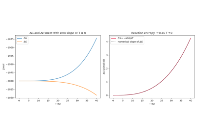
Nernst’s heat theorem: reaction entropy vanishes at absolute zero
1949 – Redlich and Kwong’s Equation of State#
Otto Redlich and Joseph N. S. Kwong, seeking a cubic equation of state accurate enough for real chemical-engineering design work without the computational burden of a fully empirical multi-parameter fit, modified van der Waals’s attractive term to depend explicitly on temperature:
The extra \(\sqrt{T}\) dependence, together with a different pair of universal constants relating a and b to a substance’s critical temperature and pressure, gives noticeably better predictions of real gas behavior – particularly of vapor densities and fugacities away from the critical point – than van der Waals’s original equation, at almost no extra computational cost, and it became (along with its own later modifications, such as Soave’s 1972 Redlich-Kwong-Soave equation) a standard workhorse of chemical process simulation for describing real gas mixtures.
Implementation: chemistrykit.thermo.systems.equations_of_state.RedlichKwong
implements exactly this equation of state, again solving its cubic in
\(V_m\) via chemistrykit.thermo.utils.cubic_roots.real_positive_roots();
from_critical_constants()
builds an instance from a substance’s critical constants and reproduces
Redlich-Kwong’s own universal critical compressibility factor
\(Z_c = 1/3\) – a different, and for most real gases somewhat more
accurate, universal prediction than van der Waals’s \(3/8\) above.
The example below compares all three equations of state – ideal gas, van
der Waals, and Redlich-Kwong – on the same CO2 P-V isotherms, both well
above and just below the critical temperature.
References: O. Redlich and J. N. S. Kwong, “On the Thermodynamics of Solutions. V. An Equation of State. Fugacities of Gaseous Solutions,” Chem. Rev. 44, 233-244 (1949).
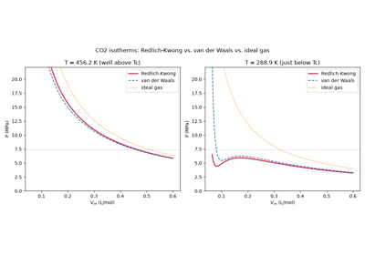
Redlich-Kwong isotherms of CO2 against van der Waals and the ideal gas
1976 – Peng and Robinson’s Equation of State#
Redlich-Kwong (1949, above) and Giorgio Soave’s 1972 modification of it predicted gas-phase properties well but liquid densities poorly. Ding-Yu Peng and Donald B. Robinson, at the University of Alberta, changed the denominator of the attraction term and made its strength depend on temperature through Kenneth Pitzer’s acentric factor \(\omega\), a single number describing how far a molecule is from a simple spherical one:
with \(\kappa = 0.37464 + 1.54226\,\omega - 0.26992\,\omega^2\). Peng and Robinson fitted \(\kappa(\omega)\) to measured vapor pressures, so the equation passes through Pitzer’s defining point, \(\log_{10}(P_{sat}/P_c) = -1 - \omega\) at \(T/T_c = 0.7\). Its universal critical compressibility factor is about 0.307, closer to real fluids than Redlich-Kwong’s 1/3. With only \(T_c\), \(P_c\), and \(\omega\) as input, it became the most widely used equation of state in the oil, gas, and chemical industries.
Implementation: PengRobinson implements
the equation, built from critical constants and the acentric factor, and
solves its cubic in \(Z\) for the liquid or vapor molar volume. The
tests check that its critical isotherm passes through \(P_c\) with
zero slope at \(Z_c = 0.3074\), and that
saturation_pressure() recovers the acentric
factor it was built with.
References: D.-Y. Peng and D. B. Robinson, “A New Two-Constant Equation of State,” Ind. Eng. Chem. Fundam. 15, 59-64 (1976); K. S. Pitzer, D. Z. Lippmann, R. F. Curl, C. M. Huggins, and D. E. Petersen, “The Volumetric and Thermodynamic Properties of Fluids. II. Compressibility Factor, Vapor Pressure and Entropy of Vaporization,” J. Am. Chem. Soc. 77, 3433-3440 (1955).
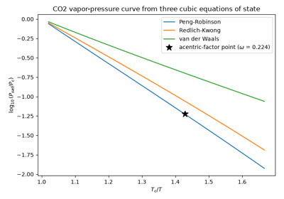
Peng-Robinson: vapor pressures from the acentric factor